Sociologia e as
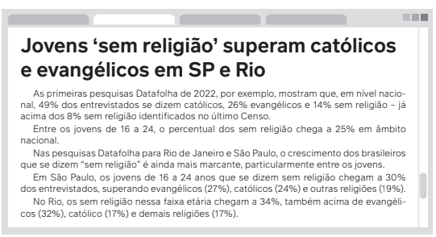
CARRANÇA, T. Jovens 'sem religião' superam católicos e evangélicos em SP e Rio. BBC News Brasil, São Paulo,
9 maio 2022. Disponível em: https://www.bbc.com/portuguese/brasil-61329257#:~:text=As%20primeiras%20
pesquisas%20Datafolha%20de,a%2025%25%20em%20%C3%A2mbito%20nacional. Acesso em: 10 maio 2024.
A pesquisa realizada pelo Datafolha em 2022, antes da divulgação
dos dados do Censo sobre pertencimento religioso no Brasil,
indicam que entre os jovens brasileiros de 16 a 24 anos, o percentual dos sem religião
chega a 25% e supera o número de católicos
e evangélicos. Mas será que declarar-se sem religião significa que
esses jovens não tenham alguma “experiência de fé” ou que não
acreditem em Deus?<
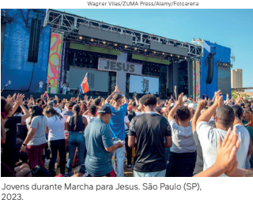
De acordo com a antropóloga Regina Novaes, professora da
Universidade Federal do Rio de Janeiro (UFRJ) e especialista no tema
da religiosidade, com base na análise detalhada dessa e de outras
pesquisas sobre a relação entre juventude e religião, esses dados
representam um fenômeno que vem ocorrendo no país nas últimas
décadas. Ele diz respeito à influência cada vez menor das famílias
em transferir o seu pertencimento religioso para os seus filhos.
Essas mudanças atingem não somente as famílias de tradição
católica, mas a realidade de famílias evangélicas. No caso destas últimas,
inclusive, o fato de não frequentarem os cultos da Igreja dos seus pais não
significa que eles
tenham se tornado agnósticos ou ateus, mas sim que talvez vivenciem a sua fé de
outra maneira,
ressignificando as práticas religiosas mais tradicionais.
Esse tema permite um debate muito interessante, que será desenvolvido ao longo do
capítulo.
A secularização aconteceu?
No início do século XX, o sociólogo Max Weber (1864-1920) afirmava que a ciência e as
formas de pensamento racional substituiriam a autoridade religiosa. Essa é a tese da secularização,
aceita pela maioria dos sociólogos da época. O fenômeno da secularização teria origem na
separação entre igrejas e Estado, um dos elementos centrais da inauguração da Era Moderna
e uma das principais características das democracias ocidentais, como o Brasil. Uma
consequência desse processo de racionalização presente na modernidade é
o fato de que as esferas
do público e do privado se tornaram distintas. Passa a haver, então, um entendimento de que a
religião deve pertencer ao plano privado, enquanto as questões relativas ao público deveriam
ser cada vez mais orientadas pela ciência e pelo conhecimento técnico e racional.
Ainda segundo Weber, as consciências e ações dos indivíduos em relação à religião e suas
instituições não desapareceriam, apesar de estarem em declínio no que diz respeito a sua
autoridade em conduzir e influenciar decisivamente as pessoas. Nessa perspectiva, ao longo
dos anos, as instituições religiosas perderiam, relativamente, a influência na vida das pessoas.
A maioria dos sociólogos começou a rever essa tese, porque a presença das religiões na
vida das pessoas não diminuiu com a modernização da vida e das esferas sociais. Por exemplo:
em 2021, foi realizada uma pesquisa nos Estados Unidos e constatou-se que 49% dos estadunidenses consideravam a religião importante. Já no Brasil – um dos países mais religiosos
do mundo –, em uma análise dos dados do IBGE, entre o período de 1940 e 2010, não houve
declínio de adesão às religiões, somente a diminuição de adeptos ao catolicismo e o aumento
dos evangélicos, como mostra o gráfico a seguir.
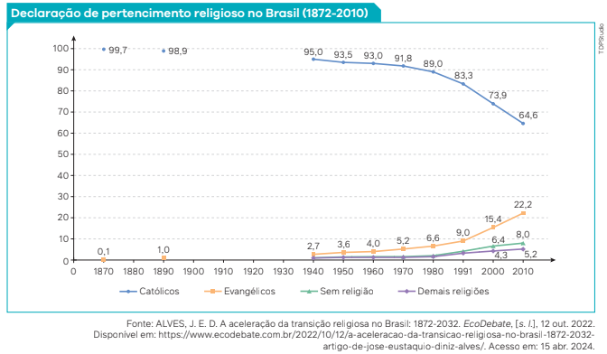
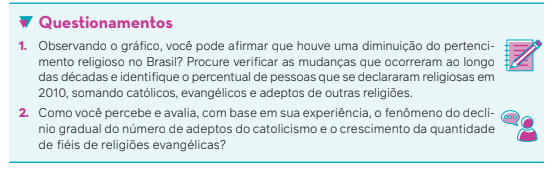
Sociologia e religiosidade
Vamos, a partir de agora, estudar a ideia de religiosidade para entender um pouco mais o fenômeno religioso,
que ainda interfere intensamente na vida da maioria dos indivíduos.
Nosso objetivo não é discutir os princípios ou conteúdos das diversas religiões para chegar à conclusão de qual
é “a melhor” religião ou “a ideal” para orientar nossas vidas. O que estudaremos aqui, com base em uma especialidade dos estudos sociológicos chamada Sociologia das Religiões, é o papel que a religiosidade tem na formação
das ideias e dos comportamentos dos indivíduos sobre o mundo, a sociedade, a política e a cultura. Como, no Brasil,
a religiosidade interfere na política, na democracia e na cidadania? A sociedade brasileira sofreu mudanças em
consequência disso nos últimos anos?
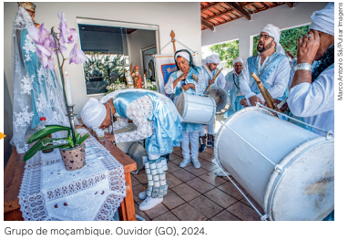
O objetivo da Sociologia das Religiões no
Brasil é compreender os efeitos sociais do
pertencimento religioso, ou seja, como os indivíduos se comportam e tomam decisões baseadas em crenças específicas. Outro objetivo
é estudar a religiosidade de grupos sociais para
entender melhor, por exemplo, como os brasileiros enfrentam seus problemas e dificuldades.
O moçambique, ou maçambique, é uma tradição
cultural e religiosa que mistura elementos das
religiões de origem africana e católica. Em vários
estados do país, está relacionado com as congadas
e com a devoção a santos católicos padroeiros
de irmandades negras como Nossa Senhora do
Rosário, São Benedito, Nossa Senhora da Penha e
Santa Efigênia.
Entende-se por religiosidade a disposição ou a tendência do indivíduo de perseguir o caminho da própria
fé ou de integrar-se às coisas sagradas.
A Sociologia estuda a religiosidade também como instituição social, já que ela apresenta uma simbologia que
invoca reverências ou temeridades às coisas sagradas e tem fiéis ou seguidores. A religiosidade tem rituais, isto é,
práticas, gestos, atos e palavras que têm significado sacro. Por exemplo: podemos acender uma vela para iluminar
nossa casa quando falta energia elétrica, mas, quando acendemos uma vela em reverência a um deus, deuses ou
forças espirituais, esse gesto configura um ato sagrado. Na maioria das religiões, há também uma prescrição de
condutas, o que quer dizer que, em função de determinada crença, você é induzido a se comportar, agir ou pensar
de certa forma.
Émile Durkheim (1858-1917) escreveu, no século XIX, que a religião é um dado da realidade e que a ciência não
pode negar esse dado como um fato social.
Para Durkheim, toda religião tem como característica separar o mundo em coisas profanas e coisas sagradas.
As coisas profanas se referem às atitudes utilitárias, ou seja, a objetos e ideias que depois de utilizados podem ser
descartados, pois só têm valor na medida em que são úteis. Já as coisas sagradas têm valor superior ao dos indivíduos. O sagrado é objeto de adoração, é superior ao humano, é reverenciado.
Essas características, para Durkheim, revelam que a religião é uma das fontes de regras de comportamento,
normas e garantias de harmonia entre os seres humanos. É também por meio dela que as sociedades se organizam, se estruturam e formam uma imagem de si mesmas. Quantas vezes, por exemplo, ouvimos dizer que quem é
religioso é também sério, honesto, cumpridor de seus deveres e obrigações?
Karl Marx (1818-1883) também analisa a importância da religião para as sociedades, mas
de outra forma. Para Marx, a religião é o “ópio do povo”: a religião não faz os seres humanos;
são os seres humanos que fazem a religião. Marx entendia a religião como a expressão do
sofrimento real das pessoas, que teriam necessidade de acreditar em algo para aliviar seus
sofrimentos – como o ópio, droga entorpecente e hoje proibida, muito popular no século XIX,
época em que ele escreveu. Segundo Marx, as classes dominantes utilizam a religião como
ideologia para dominar os oprimidos e explorados. O autor considera a religião, portanto, uma
ilusão, uma ideologia que contribui para justificar a dominação de classe. Marx e outros
intelectuais influenciados por suas teorias dizem que isso acontece, por exemplo, quando as igrejas afirmam que os pobres devem se conformar com sua condição de pobreza, pois o mundo
foi criado por Deus desse modo e assim sempre será. É nesse sentido também que o debate
teórico de Marx em relação à religião se conecta com o seu conceito de alienação.
De acordo com Marx, a “consciência religiosa” é uma forma do “pensamento alienado”. O
que ele queria dizer é que, na medida em que os seres humanos não são verdadeiramente
livres em sociedade, enquanto não adquirem a capacidade de se apropriar racionalmente e
de forma transparente das suas relações de trabalho, do fruto do seu trabalho e da sua relação com a natureza, a religião continuará se manifestando como um “sol ilusório”, em torno
do qual a humanidade se move. É uma relação alienada, portanto, já que encobre com uma
aura mística as relações sociais da forma como estas de fato acontecem. Ao mesmo tempo,
segundo Marx, a religião se torna uma necessidade humana, pois lhe proporciona determinada
“consciência e sentimentos”, permitindo respostas que a humanidade ainda não
conseguiu encontrar – ou, em dada situação histórica, que poderia ter perdido. A tarefa dos seres
humanos, para Marx, é se apoderar do seu próprio projeto de sociedade, das suas relações
sociais e materiais concretas, reais, superando sua alienação em relação ao seu trabalho e aos
resultados do seu trabalho. Enquanto isso não acontecer, a religião continuará resistindo e se
fortalecendo ao longo dos séculos.
Max Weber também estudou as religiões. Para ele, é na compreensão dos comportamentos
religiosos que podemos entender melhor as atividades humanas, pois a religiosidade influencia também áreas como a Ética, a Economia, a Política ou as Artes. Em seus estudos, Weber
procurou demonstrar as relações entre o desenvolvimento do capitalismo e um tipo de ética
orientada para o trabalho, que surgiu a partir da Reforma Protestante.
O autor argumenta que, na Antiguidade, o trabalho era visto como uma coisa penosa e vil.
Na Idade Média, com base em uma visão de mundo católica, o trabalho passou a ser percebido
como fruto do “pecado original” e como tortura. O surgimento das igrejas protestantes, como a
Luterana e a Calvinista, teria sido responsável, segundo Weber, pela propagação de uma visão
positiva do trabalho, que serviu perfeitamente ao desenvolvimento do capitalismo. O autor
chamou de ética protestante um conjunto de práticas e disposições incentivadas por essas
igrejas, que tinham como base a concepção de que o trabalho é uma expressão de sucesso
na vida terrena, uma manifestação das bênçãos divinas. O comportamento austero, assim, era
incentivado entre os fiéis dessas religiões, já que os tornaria mais dedicados ao trabalho e,
portanto, à acumulação de riquezas.
O italiano Antonio Gramsci (1891-1937) também escreveu sobre a religião. Leia a seguir.
" (...) Neste sentido, a religião é a mais gigantesca utopia (...) que já apareceu na história,
já que ela é a mais grandiosa tentativa de conciliar em forma mitológica as contradições
reais da vida histórica: ela afirma, na verdade, que o homem tem a mesma “natureza”, que
existe o homem em geral, enquanto criado por Deus, filho de Deus, sendo por isso irmão
dos outros homens, igual aos outros homens, livre entre os outros e da mesma maneira
que os outros, e que ele pode se conceber desta forma espelhando-se em Deus, “autocons-
ciência” da humanidade; mas afirma também que nada disto pertence a este mundo e
ocorrerá neste mundo, mas em um outro (— utópico —). Assim, as ideias de igualdade,
liberdade e fraternidade fermentam entre os homens (...). Ocorreu assim que, em toda
sublevação radical das multidões, de um modo ou de outro, sob formas e ideologias determinadas, foram colocadas estas reivindicações."
GRAMSCI, A. Cadernos do cárcere. Tradução: Carlos Nelson Coutinho.
Rio de Janeiro: Civilização Brasileira, 1999. v. 1, p. 205.
O que Gramsci quer dizer com isso é que as religiões são forças poderosas também para
mobilizar os indivíduos em direção a um mundo melhor. Insatisfeitos com a realidade em que
vivem, os indivíduos podem tentar transformar o mundo inspirados pela religiosidade. Essa
concepção de Gramsci – de perceber a religião como força transformadora, e não de alienação – foi inovadora em relação aos demais sociólogos do século XIX e início do século XX.
Ela se tornou bastante relevante para pensar, na atualidade, as diversas relações entre a religiosidade, a política e os movimentos sociais, estabelecidas em várias partes do mundo por
movimentos religiosos de origens bem distintas.
Pertencimento religioso no Brasil
O Brasil é considerado um dos países mais religiosos do mundo. Entretanto, é necessário perceber que nossa
formação nacional se caracteriza pela influência de várias matrizes religiosas. O catolicismo vinculado ao Vaticano
é dominante, sendo expresso em diversas manifestações, como o catolicismo popular, o catolicismo carismático
e o catolicismo da libertação. Temos também a presença dos evangélicos, expressa por protestantes tradicionais,
pentecostais e neopentecostais. Além desses, temos as religiões de matrizes africanas – como o candomblé e a
umbanda –, os espíritas kardecistas e outras denominações menos expressivas.
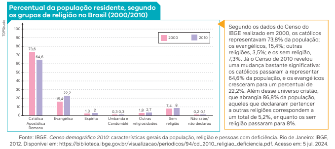
Precisamos fazer duas considerações importantes em relação aos dados apresentados no gráfico. A primeira
consideração se refere à predominância do cristianismo no país como um todo. Ela se manifesta de forma tão
expressiva no processo de socialização – inclusive com a repetição de frases cotidianas exaltando positivamente que
“vivemos em um país cristão, graças a Deus” –, que essa característica se torna um elemento naturalizado como
parte da cultura nacional. Precisamos, também, considerar as interseções de algumas manifestações religiosas,
que podemos identificar sob o fenômeno do sincretismo – conversaremos a esse respeito mais adiante.
Projeções estatísticas e a transição religiosa à brasileira
Você já ouviu falar do processo de transição religiosa? O demógrafo José Eustáquio Diniz Alves, em artigo
publicado no ano de 2022, analisou esse fenômeno social, que consiste na substituição do predomínio de uma
religião por outra. Vamos entender melhor de que forma isso ocorre.
No artigo mencionado, Alves retoma a ideia de o Brasil ter sido concebido dentro do empreendimento das
Grandes Navegações da Europa cristã, portanto, em sua gênese, o país esteve profundamente vinculado à religião
católica. O catolicismo se tornou uma das principais marcas da identidade brasileira.
Como vimos anteriormente no Gráfico 1, em 1872, 99,7% dos brasileiros se declararam católicos e somente
0,1% se reconheciam como evangélicos. Quase 100 anos depois, em 1970, os católicos passaram a ser 91,8%, os
evangélicos, 5,2%, outras religiões, 2,3%, e os sem religião, 0,8%. Já no Censo de 1991, os católicos passaram a
ser 83%, e em 2000, diminuíram para 73% da população. Isso quer dizer, como afirma José Eustáquio Alves, que
a diminuição dos que se autodeclararam como católicos, a partir de 2000, passou a ser de 1% ao ano, e o crescimento dos evangélicos de 0,7% ao ano. Além disso, “as outras religiões cresceram 0,1% ao ano e os sem religião
cresceram 0,17% ao ano”.
Alves argumenta a constatação de uma projeção, no cenário da religiosidade brasileira, baseada nos seguintes
pressupostos:
• continuidade da queda das filiações católicas no ritmo de 1,2% ao ano;
• aumento anual de 0,8% dos evangélicos, de 0,17% das outras religiões e 0,23% das pessoas autodeclaradas
sem religião.
Vamos analisar a projeção estatística representada no gráfico a seguir, à luz dos dados apontados acima.
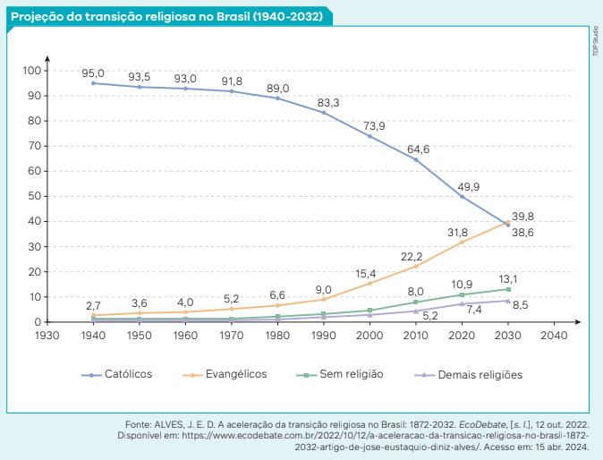
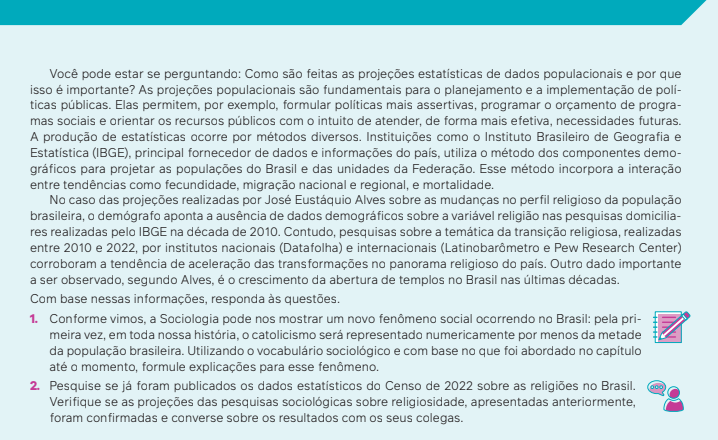
Catolicismo no Brasil
Embora o número de praticantes do catolicismo esteja em declínio no Brasil, ele persiste como a religião mais professada no país e pode ser classificado de formas diferentes,
como o catolicismo oficial, o catolicismo popular, o catolicismo carismático e o catolicismo da
libertação.
Catolicismo oficial
O catolicismo oficial é identificado pela instituição da Igreja, vinculada ao Vaticano – que
é a cidade-Estado sede da religião católica, onde residem o papa e a burocracia central da
religião. Até a Proclamação da República, o catolicismo era a religião oficial do Estado imperial
brasileiro. A partir da República, mesmo não constando mais nas constituições brasileiras, o
catolicismo era a religião com maior número de adeptos no país, como mostram os dados dos
censos demográficos até 2010. O catolicismo oficial tem como característica se organizar institucionalmente como Igreja Católica Apostólica Romana.
Na linguagem sociológica, Igreja é uma organização burocrática religiosa. Ela não desafia
a autoridade do Estado, tem uma organização de treinamento de líderes, hierarquia forte e
regulamentos bem definidos. Em sua hierarquia, abaixo do papa estão os cardeais, arcebispos, bispos, padres e diáconos, distribuídos em extensas subdivisões territoriais em todos os
países em que a religião está presente. As mulheres têm uma participação marginal nessa
estrutura hierárquica, por meio principalmente de freiras pertencentes à Igreja, vinculadas a
congregações religiosas com organização interna bastante rígida e fechada. Essas características fazem a instituição ter longa durabilidade. Por conta disso, também, o catolicismo oficial
frequentemente esteve ao lado dos poderes constituídos, legitimando e justificando, muitas
vezes, a situação política e social do país.
A relação íntima entre a Igreja Católica e o poder político constituído teve início com a conversão do imperador romano Constantino I, responsável pelo fim da proibição dos cultos e da
perseguição aos seus seguidores, no ano 380, século IV d.C. O calendário oficial dos países
do Ocidente, portanto, tem origem no catolicismo, sendo contado a partir de uma data que se
convencionou como o nascimento de Jesus Cristo, que é entendido como o filho direto que
Deus enviou à humanidade para anunciar as suas palavras de salvação a todos os seres humanos, sem qualquer distinção. A Igreja Católica foi criada pelos fiéis discípulos (seguidores) de
Cristo – os cristãos – para dar prosseguimento à sua missão.
Catolicismo popular
O chamado catolicismo popular, no Brasil, tem características devocionais de culto às imagens dos santos. A prática popular se apresenta menos como instituição e mais como experiência vivida em devoção às imagens sagradas; por isso, o catolicismo popular não forma um
corpo especializado de agentes religiosos e não é vinculado ao sacramento da Igreja Católica
oficial. Embora a Igreja oficial não proíba práticas devocionais por parte de seus fiéis, a devoção a imagens santas é o espaço no qual o invisível se torna palpável e acessível, possibilitando
uma comunicação direta entre o devoto e o santo, que dispensa a mediação de autoridades
religiosas.
Nos centros urbanos, o catolicismo popular foi constituído pelas irmandades; no campo, com
o culto aos beatos, aos monges e à crença nas “rezadeiras”. Essas últimas são, sobretudo, mulheres que se consideram católicas, mas suas rezas e práticas de cura de doenças, que muitas vezes
utilizam ervas, envolvendo elementos sincréticos das tradições religiosas de origem indígena e
das religiões afro-brasileiras. Irmandades são grupos de devotos leigos, reunidos em associações privadas, que têm como objetivo a manutenção do culto ou devoção e têm
autonomia jurídica e econômica. Os beatos e os monges são os penitentes, que
vivem principalmente no interior do Brasil e que, em alguns casos, tornaram-se
santos populares e passaram a atrair romeiros e devotos.
Na realidade brasileira, o catolicismo popular foi, e ainda é, um elemento
utilizado para exercer a dominação política e econômica por parte de grupos
pertencentes a classes dominantes, especialmente em áreas rurais. Na década de
1980, foi exibida na televisão aberta uma novela que obteve grande audiência intitulada Roque santeiro, escrita pelo dramaturgo Dias Gomes.
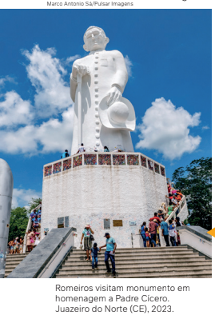
Nela,
o personagem Sinhozinho Malta, um latifundiário (chamado de coronel), utilizou-se da crença popular aos santos para justificar sua dominação política no
interior da Bahia. Por esse motivo, a novela foi censurada durante a Ditadura
Civil-Militar. Os chamados “coronéis” diziam que o povo deveria sempre rezar
e ser devoto dos santos, pois somente assim alcançaria o paraíso dos céus, já
que aqui na Terra há uns que nasceram ricos e outros pobres, e não há como
mudar essa situação.
A devoção a Padre Cícero é uma expressão do catolicismo popular
muito comum no estado do Ceará. Padre Cícero (1844-1934) é
considerado um santo por muitos de seus devotos, embora não
seja oficialmente reconhecido como tal pela Igreja Católica.
Catolicismo carismático
A Renovação Carismática Católica (RCC) é originária dos Estados Unidos e chegou ao Brasil
em 1972. Ela nasceu do movimento de leigos no interior da Igreja Católica e tem como base os
grupos de oração com encontros semanais. Esses grupos não pretendem substituir a vida sacramental, e sim complementá-la ao proporcionar uma experiência individual que os adeptos
entendem como espiritualmente mais intensa.
Os encontros se baseiam em manifestações de louvor, ações de graça, cânticos, testemunhos e partilhas; encontros nos quais as pessoas cantam, dançam e extravasam as tensões.
Os carismáticos também fazem grandes encontros em locais públicos. Para eles, “ser cristão é
viver em relacionamento íntimo com a Santíssima Trindade”.

Na década de 1990, o movimento carismático serviu, no Brasil, como
uma reação interna da Igreja Católica
tradicional à diminuição de sua influência relativa no país, em oposição
ao crescimento acentuado do número
de conversões das igrejas evangélicas
pentecostais, que reúnem diversas
características reproduzidas pelos carismáticos católicos. Começou, então,
uma disputa pelo mercado religioso
no Brasil. É a partir daí que podemos
entender o grande sucesso de figuras
como o padre Marcelo Rossi.
Missa celebrada pelo Padre Marcelo Rossi.
Cachoeira Paulista (SP), 2019.
O conceito de mercado religioso é proposto pelo sociólogo austro-estadunidense Peter Berger (1929-2017).
Em seus estudos, Berger defende que o fenômeno tem origem na separação entre Estado e Igreja, na esteira
das transformações que inauguraram a Era Moderna, como ressaltamos no início do capítulo. Seguindo a linha
weberiana, Peter Berger afirma que, com o fim do monopólio religioso por parte do Estado, com a sua “privatização”
– ou seja, com a opção religiosa tornando-se uma escolha exclusiva da vida privada –, o pluralismo religioso estabelece uma competição entre várias religiões pela filiação de um número cada vez maior de fiéis. Os
fiéis seriam enquadrados, assim, em uma lógica de “mercado”, isto é, de disputa pelo número de consumidores
de bens religiosos.
Catolicismo da libertação
Com a grave crise social na América Latina nos anos 1960, proliferou-se um vasto
movimento social de católicos preocupados em melhorar as condições de vida da
população latino-americana. Surgiram movimentos como a Ação Católica, Juventude
Universitária Cristã, Juventude Operária Cristã e as Comunidades Eclesiais de Base.
Na preparação da Conferência de Medellín (1968), bispos progressistas orientaram os
católicos a uma opção preferencial pelos pobres; daí a adoção da expressão “Libertar
os pobres da opressão”. Esse segmento do catolicismo foi denominado Teologia da Libertação
(TL). Apesar de nos referirmos a esse segmento como vinculado, principalmente, ao
catolicismo, a TL tem como característica o ecumenismo, sendo também
adotada por setores de igrejas protestantes, como metodistas, luteranos e batistas.
Trataremos adiante dos protestantes.
A partir de 1970, teólogos como Leonardo Boff, Clodovis Boff e Frei Betto, e bispos
como Dom Hélder Câmara e Dom Pedro Casaldáliga, entre tantos outros, denunciaram as condições de miséria do povo trabalhador, defendendo alguns princípios:
1. Luta contra a idolatria do mercado, da força militar e da riqueza – identificados
como inimigos principais da religião.
2. Releitura da Bíblia, em que o momento do êxodo do povo hebreu, ao lutar contra a
sua condição de escravização no Antigo Egito, passa a ser entendido como modelo de luta do povo escravizado pela sua libertação.
3. Uso das teorias socialistas para entender as causas da pobreza, das contradições
do capitalismo e a luta de classes.
4. Opção pelos pobres e solidariedade com sua luta pela autolibertação.
5. Criação de Comunidades Eclesiais de Base para organizar o povo em suas lutas,
com o método político de Ver-Julgar-Agir-Rever. Esse movimento foi muito importante na resistência à Ditadura Civil-Militar e contribuiu para a formação do PT e do
MST, assim como para a de sindicatos e outras organizações populares.
Evangélicos no Brasil
A religião evangélica também tem diferentes origens e vertentes, as quais variam de acordo com o contexto histórico em que se originaram, a organização interna que estabelecem, as práticas religiosas que adotam, entre outros aspectos. >
Os evangélicos protestantes
No século XVI, na Europa, várias igrejas cristãs iniciaram um movimento cujo objetivo era a reforma da Igreja de
Roma. Em 1517, um monge agostiniano, o alemão Martinho Lutero (1483-1546), iniciou um questionamento sobre a
infalibilidade do papa. Além de Lutero, apareceram outros como Thomas Müntzer e João Calvino, que afirmavam que
os cristãos não deveriam mais se submeter às autoridades religiosas, mas somente às próprias escrituras, ou seja, à
Bíblia. Assim, se iniciou o que ficou conhecido como protestantismo e uma separação entre católicos e protestantes.
O termo protestante não significa a mesma coisa que o termo evangélico. Protestante está relacionado ao movimento iniciado por Lutero e se refere, historicamente, à dissidência da Igreja Católica Romana, ou seja, marca
uma posição teológica e política sobre questões que envolviam as controvérsias com a Igreja Romana. Já o termo
evangélico, após os vários movimentos da Reforma Protestante, passou a ser utilizado como um conceito agregador, na perspectiva de favorecer a unidade dos vários movimentos e denominações surgidos na Europa, tais como
o luteranismo, o metodismo e o calvinismo. Foi assim que o termo evangélico passou a representar todos aqueles
que se diferenciaram da Igreja de Roma.
As igrejas protestantes e evangélicas não apresentam a estrutura hierárquica presente no catolicismo oficial,
caracterizando-se por uma ampla fragmentação. Aqueles que comandam as igrejas e suas liturgias são chamados
de pastores, que precisam frequentar um curso de teologia específico da denominação a qual se filiam. Diferentemente também da Igreja Católica, mulheres podem ser nomeadas pastoras, apesar de ainda haver grande preponderância masculina. Em algumas igrejas, há a nomeação de bispos enquanto superiores hierárquicos.
Apesar da existência de diferenças entre cada igreja, o que a liturgia apresenta em comum, em geral, é a realização de cultos dedicados ao louvor (adoração, exaltação, glorificação) a Deus, com a interpretação de diversos
cânticos e momentos de oração coletiva; à leitura dos textos bíblicos; à comunhão com Jesus Cristo; e à pregação
pelos pastores. Outras características importantes que acompanham e unificam esse movimento cristão desde a
Reforma Protestante, apesar da sua diversidade atual, são os seguintes:
• A fé somente pode ser justificada em Jesus Cristo, que é o único responsável pela mediação entre Deus e os
seres humanos.
• A autoridade máxima e a regra de fé e prática das igrejas é dada somente pela Bíblia.
• A autoridade máxima e a regra de fé e prática das igrejas é dada somente pela Bíblia.
No século XIX, apesar de o catolicismo ainda ser a religião oficial do Estado brasileiro, diversos missionários
europeus e estadunidenses conseguiram autorização do Império para fundar no país igrejas cristãs não católicas,
como a Presbiteriana, a Batista, a Metodista, a Congregacional e a Anglicana. Estas são consideradas igrejas protestantes históricas, juntamente com outras denominações, e suas ações eram direcionadas aos estrangeiros que
aqui viviam ou que passaram a residir no Brasil a partir dos tratados de imigração.
Evangélicos pentecostais e neopentecostais
Os evangélicos pentecostais são grupos que compartilham a espera da segunda vinda de
Cristo à Terra e creem ter acesso, no cotidiano, à ação do Espírito Santo, ao qual atribuem a
possibilidade de curas dos males da alma e do corpo. Note-se que, nos últimos anos, ocorreu um
crescimento vertiginoso dessas religiões. Ao longo da história, os pentecostais sempre foram
minoria. Somente a partir do final da década de 1970 o número de adeptos começou a crescer.
Segundo o antropólogo Ari Pedro Oro, há duas doutrinas teológicas que caracterizam a
visão pentecostal, tanto no Brasil como na América Latina: as teologias da Guerra Espiritual e
da Prosperidade.
A primeira é expressa na crença nas atividades das
“forças demoníacas”. Essas forças devem ser combatidas nos rituais de exorcismo para a “libertação dos
demônios” como condição sacramental para obter a
“cura” ou a “prosperidade divina”. A segunda, a Teologia da Prosperidade, é expressa na leitura do evan-
gelho, como promessa de bem-estar; na doutrina da
confissão positiva que consagra o poder da palavra,
ou seja, pedir, fazer ou receber o que deseja, além de
relatar ao outro o que aconteceu; na obtenção de bençãos – o que inclui a obtenção de bens materiais; e na
definição de “dar” ou oferecer bens monetários como
condição para se obter bençãos de Deus.
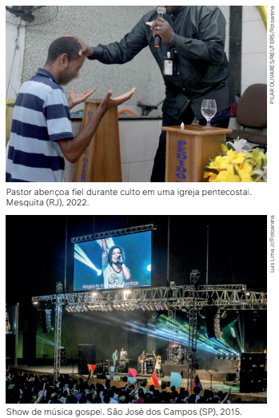
Oro também afirma que as denominações evangélicas neopentecostais são compreendidas como
aquelas que têm aspectos específicos em comparação
ao pentecostalismo original. Entre esses aspectos, podemos citar a formação de líderes com personalidades
fortes e carismáticas, o estímulo à expressividade emocional nos cultos e a exclusividade de pertencimento
diante de todas as religiões (incluídas as evangélicas).
O antropólogo destaca, no entanto, que alguns desses
aspectos já existiam entre os pentecostais originá
rios. O que acontece entre os neopentecostais é uma
exarcerbação de certos aspectos. O exemplo que ele
apresenta são os projetos de transnacionalização (a
abertura de igrejas em outros países) e o acentuado
uso das mídias, tradicionais ou novas, como as redes
sociais digitais. Esta última característica levou o
antropológo brasileiro Carlos Rodrigues Brandão a afirmar
que existe uma indústria cultural evangélica que acolhe o fiel em casa e amplifica o
espectro da cultura difundida pelos neopentecostais.
A partir da década de 1980, os pentecostais se apresentaram na sociedade brasileira, que
vive uma profunda crise social, como agentes que oferecem uma solução para a ausência de
cidadania. Esse fato aponta algumas pistas de como as religiões operam no enfretamento de
problemas materiais e emocionais imediatos de muitos brasileiros.
E quais são os elementos e mecanismos que contribuem para a conversão pentecostal e,
por consequência, para seu crescimento numérico? Os principais são: os pentecostais atraem
seus futuros fiéis por meio dos meios de comunicação que têm em mãos; há acesso direto
aos pastores; há permanente consolação dos aflitos; há ocupação de espaços onde quase
não existem instituições como escolas, assistência social, em suma, o Estado; os pentecostais
também se tornam um recurso de recuperação familiar (combatendo vícios relacionados ao
uso de álcool, drogas ilícitas, entre outras substâncias). Por fim, eles se apresentam à população mais carente como uma alternativa à ausência de cidadania e ao acesso a diversos
direitos que deveriam ser básicos. Além disso, nas periferias, o pertencimento a uma comunidade religiosa, com todo o apoio material e espiritual que ela pode proporcionar aos seus
membros, representa uma alternativa bem concreta à falta de perspectiva social e política de
parte da juventude.
Religiões de matriz africana e afro-brasileiras
As religiões que têm como base o culto a seres e entidades espirituais de origem no continente africano,
como o candomblé e a umbanda, por exemplo, são também denominadas religiões de matriz africana ou religiões
afro-brasileiras.
Durante a colonização do Brasil, uma das únicas coisas que os portugueses não puderam roubar dos africanos
escravizados foi a fé religiosa. E essa fé sempre foi um fator de reconstrução de cultura. Alguns estudiosos das
culturas negras afirmam que, com a necessidade de os africanos e seus descendentes manterem suas culturas no
Brasil, houve a reterritorialização de costumes e crenças no espaço dos terreiros de candomblé e de umbanda.
Era uma espécie de recurso de sobrevivência, pois, tratados à base da tortura e do terror da escravidão, não lhes
restava outra coisa senão suas crenças, valores e costumes.
Assim, a religião impregnou todas as atividades da população negra brasileira, influenciando, inclusive, a vida
profana. Recriando nas comunidades-terreiro o candomblé – o espaço da África e sua herança cultural –, os
africanos escravizados conservaram um profundo sentido de comunidade e transmitiram de geração em geração as
raízes de sua cultura. Portanto, o candomblé é uma criação brasileira com profundas raízes ancestrais africanas. As
tradições religiosas de matriz africana recebem outros nomes em algumas regiões do Brasil, bem como apresentam algumas variações nos rituais e nas divindades cultuadas, tais como Batuque, no Rio Grande do Sul; Tambor de
Mina, no Maranhão; e Xangô, em Pernambuco e Alagoas.
Além dos orixás, entidades divinas, poderes e patronos de forças
da natureza – como Exu, Iemanjá, Oxum, Oxóssi, Xangô, Iansã, Omulu
e Oxumaré –, grupos de africanos e seus descendentes também
cultuavam seus antepassados, os eguns – espíritos de indivíduos que
depois se converteram em ancestrais, em “pais” (baba egun). O culto
aos antepassados, entretanto, não pode, em hipótese alguma, se
confundir com o culto aos orixás, já que cada um deles tem doutrina
e liturgia próprias.
Enquanto o candomblé cultua as forças da natureza dos orixás,
a umbanda pratica o culto de diversos espíritos ancestrais, chamados de entidades, como pretos-velhos, caboclos, pombagiras, exus e
crianças. Esses espíritos incorporam em seus fiéis – adeptos iniciados
ritualmente na umbanda – para dar consultas de ajuda à comunidade.
A umbanda também é uma criação essencialmente brasileira, surgida
na primeira década do século XX. É um culto sincrético, pois há certa
mistura de cultos africanos aos ancestrais com cultos aos ancestrais
indígenas e cultos de origem cigana, remetendo a costumes de antigos povos que ainda hoje vivem em algumas regiões da Europa e
da Ásia. Estão presentes também símbolos católicos e elementos do
espiritismo kardecista.
Espiritismo kardecista
A doutrina espírita, ou o espiritismo, conhecida no Brasil, de
modo geral, como kardecismo, é também conhecida por parte da
população, em algumas regiões, como o “espiritismo de mesa branca”.
Isso se dá por referência à toalha branca que sempre cobre a
mesa onde se sentam aqueles que presidem as sessões nos centros espíritas, acompanhados pelos “médiuns”, ou seja, pelas pessoas que têm o dom de se comunicar com “os espíritos daqueles
que já se foram da vida terrena”. Outra justificativa para o uso do
termo “mesa branca” diz respeito a uma forma de diferenciação e
oposição aos centros das religiões afro-brasileiras, inclusive pelo
fato de sua teologia – diferentemente destas – ter como base de
sustentação o cristianismo.
O espiritismo se autodefine, ao mesmo tempo, como uma religião, uma filosofia e uma
ciência, criada na França, no século XIX, por Allan Kardec, pseudônimo do pedagogo francês
Hippolyte Léon Denizard Rivail (1804-1869). Kardec é reconhecido pelos espíritas como o codificador da doutrina: ele não teria “inventado” nada, apenas sido o instrumento da organização
teórica que traduziu os “fenômenos espirituais” presentes no cotidiano e que já eram identificados e percebidos
por centenas de pessoas. Suas leituras desses fenômenos foram sistematizadas em diversas obras que até hoje
servem de referência para todos os praticantes e adeptos do espiritismo – uma delas, O Evangelho segundo o
espiritismo, propõe a releitura dos textos dos quatro evangelhos cristãos à luz da doutrina, interpretando teologicamente, do ponto de vista espírita, a vida e as palavras proferidas por Jesus Cristo.
Apesar de o espiritismo não se definir especificamente somente como uma religião, pode-se dizer que ele
assumiu esse formato no Brasil, sendo praticado por cerca de quatro milhões de pessoas. Fora esse quantitativo,
os adeptos do kardecismo sempre citam a existência de uma enorme quantidade de “simpatizantes” que não são
contabilizados pelas pesquisas censitárias do IBGE. Esses simpatizantes seriam adeptos de outras religiões (principalmente católicos) ou pessoas sem religião oficial definida, mas que creem na doutrina ou “na vida após a morte”,
atestada pela existência dos espíritos. Um exemplo disso é a grande acolhida popular de novelas televisivas, assim
como filmes de temática especificamente espírita que foram campeões de bilheteria nos cinemas brasileiros.
Coisa de brasileiro? O fenômeno do sincretismo
Um fenômeno social bastante interessante no Brasil é o sincretismo religioso. Este é o resultado do contato
social entre povos e grupos, promovendo uma espécie de “fusão” ou “amálgama” de determinadas características
religiosas e culturais distintas desses grupos. O sincretismo é, portanto, a existência comum de traços culturais e
religiosos, originalmente diferentes, que poderiam ser interpretados como incompatíveis ou antagônicos, mas que
acabam se apresentando como um só elemento novo e único.
No caso do Brasil, o sincretismo se dá com o encontro entre africanos escravizados, povos indígenas e brancos
europeus. Porém, antes de examinar o sincretismo na religiosidade brasileira, vamos ver como ele foi analisado na
história.
O fenômeno do sincretismo não foi inventado no Brasil. Ele tem origem na Grécia Antiga: dizem alguns historiadores que os cretenses, sempre dispostos a brigar entre si, se uniam quando eram atacados por um inimigo
externo: sim + cretismo = união dos cretenses.
Ao longo da história, o termo foi associado aos contatos e fusões religiosas e culturais de diversos povos. Atualmente, no sul da Itália (na Calábria), por exemplo, acontece na semana de Páscoa um ritual religioso que mistura a
Paixão de Cristo com rituais de autoflagelação dos antigos gregos.
No Brasil, o sincretismo se manifestou em vários níveis. O candomblé, por exemplo, é resultado da reelaboração
de diversas culturas africanas. Tanto nessa religião como na umbanda ocorre a realização de um jogo de contatos,
uma troca de influências. Essas religiões podem ser entendidas como “espaços de resistência”, na medida em que
os africanos escravizados e seus descendentes geraram novas formações sincréticas no território brasileiro e das
Américas como um todo, originais em comparação com as religiões africanas que lhes serviram de origem.
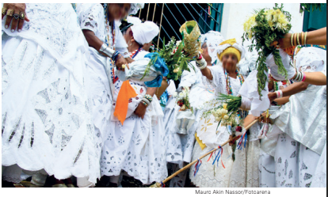
A prática do catolicismo popular também é sincrética, como o culto a Nossa Senhora dos Navegantes e a Iemanjá. A mesma imagem representa
rituais na igreja e no mar. A festa do Nosso Senhor
do Bonfim também reza a missa e faz a lavagem das
escadarias pelas mães de santo e filhas de santo.
Outro exemplo popular de sincretismo está na devoção católica a São Jorge, que corresponde, nas
religiões de matriz africana, ao orixá Ogum, no Rio
de Janeiro, e, ao mesmo tempo, a Oxóssi, na Bahia.
A sociedade, seus desafios e a religiosidade
A religiosidade permeia a vida individual e social para além das religiões, da espiritualidade e da construção de
identidades. Ela também adentra questões da vida em sociedade e da política nacional.
Racismo, intolerância e fundamentalismo religioso
Atualmente, um dos grandes debates que se realiza na Sociologia brasileira é o fenômeno do racismo religioso.
O conceito está relacionado aos inúmeros casos de violência contra as religiões de matriz africana no Brasil. O racismo
religioso não significa uma forma de discriminação dirigida especificamente a uma pessoa, e sim a formas de cultuar e existir da pessoa adepta ao candomblé ou da umbanda – em geral, pessoas negras. É importante enten-
dermos que a história de perseguições, hostilidades, destruição de terreiros, entre outros atos decorrentes do
preconceito racial desde a colonização do Brasil, representa uma tentativa de eliminar a cultura afro-brasileira.
O racismo se manifesta, dessa forma, na dualidade que interpreta o mundo dividido “entre o bem e o mal” – o último
seria explicitamente identificado nas atividades das religiões de matrizes africanas e nas populações negras que
continuariam perseguidas e criminalizadas durante a história do Brasil.
Para termos uma dimensão do que estamos tratando aqui, o Ministério dos
Direitos Humanos e da Cidadania publicou, em janeiro de 2024, a identificação
de 2124 denúncias de casos de intolerância religiosa ocorridos no país durante
o ano de 2023 – número que representa um aumento de 80% em relação a 2022,
quando haviam sido catalogadas 1184 denúncias de violação dos direitos humanos
do ponto de vista religioso. A constatação de que a maioria desses casos tem
como alvo as religiões de matrizes africanas respalda a utilização sociológica da
expressão racismo religioso.
Terreiro de candomblé destruído por incêndio
supostamente criminoso. Brasília (DF), 2015.
É importante registrar que o termo racismo religioso tem sido utilizado com mais frequência nas análises da
realidade brasileira, como assinalamos, tendo em vista o peso da herança que o passado histórico colonial e escravista ainda tem na configuração das desigualdades sociais. Não se trata, porém, de um fenômeno sociológico ex-
clusivamente nacional, mas de cunho global, reconhecido sob a expressão de intolerância religiosa. A intolerância
religiosa se manifesta em todas as partes do planeta em relação a manifestações religiosas diversas, tais como o
islamismo, o judaísmo, o budismo e o hinduísmo. A depender da história específica vivida pela população na região,
atos de intolerância e violência se repetem continuamente, acentuados por ações políticas ou de ordem social e
econômica. Têm sido frequentes os casos de islamofobia em países europeus, com a crescente acusação de que
os adeptos do islamismo seriam fanáticos religiosos. Assim como tem ocorrido há décadas ataques por parte de
segmentos islâmicos contra a população adepta do hinduísmo no subcontinente indiano, na Ásia.
O fenômeno da intolerância religiosa tem relação direta com o conceito de fundamentalismo religioso.
O que significa essa ideia? Trata-se da disseminação de práticas de intolerância religiosa que têm como base
de sustentação uma interpretação literal dos textos definidos como sagrados por parte de algum segmento
religioso específico. Essa compreensão literal contribui para a rejeição a determinadas práticas religiosas
distintas, que não são consideradas divinas pelo tal segmento religioso, podendo significar o estímulo à violência
contra outras concepções religiosas, assim como a seus símbolos e rituais. O fundamentalismo religioso não
é característica de uma religião específica, mas pode sustentar, do ponto de vista teórico e prático, diversas
formas de intolerância e de violência religiosa.
Religião e política no Brasil
Conforme estudamos até aqui, a religiosidade fornece aos indivíduos concepções sobre a vida, a sociedade, seu
passado, presente e futuro, não se restringindo à crença individual, ao culto aos deuses, ou a Deus. Como vimos nas
reflexões e pesquisas de vários sociólogos, a religiosidade nos orienta a ter normas e regras de comportamento. Ela
pode também, no entanto, representar os interesses de determinados grupos subjugando outros, além de interferir
em outras atividades humanas, incluindo a luta contra as injustiças e explorações.
O brasileiro sempre teve na religião um dos recursos mais fortes para manter suas culturas, suas relações com a
realidade social e suas lutas por uma vida mais digna. Por essa razão, afirmamos que religiosidade e política sempre
se envolveram mutuamente. Isso ocorreu com frequência na história do Brasil: na resistência dos africanos escravizados e seus descendentes para manter suas culturas; no caso dos adeptos e comunidades vinculadas à Teologia
da Libertação, na defesa dos seus ideais; assim como quando os pentecostais cumprem um papel onde o Estado
se encontra ausente em suas políticas públicas sociais, procurando substituir e suprir as necessidades básicas de
muitos brasileiros excluídos.
Se religião e política sempre estiveram relacionadas no Brasil, nos últimos anos temos observado uma presença
cada vez maior da atuação religiosa na política partidária, isto é, no plano da política que diz respeito à administração do Estado e da vida pública.
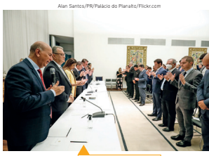
Pesquisas recentes apontam para um número crescente de candidatos a cargos políticos que constroem suas campanhas com base em
identificações religiosas e pautam suas candidaturas majoritariamente por temas de interesse e posicionamentos orientados por doutrinas
cristãs. Evangélicos (denominação genérica também para pentecostais
e neopentecostais), em especial, aumentaram significativamente sua
influência no Parlamento brasileiro desde os anos 1990. No Congresso Nacional, por exemplo, dos 513 parlamentares que foram eleitos em
2022, 403 se identificaram religiosamente – ou seja, 75,55% do total,
como mostra o gráfico a seguir.
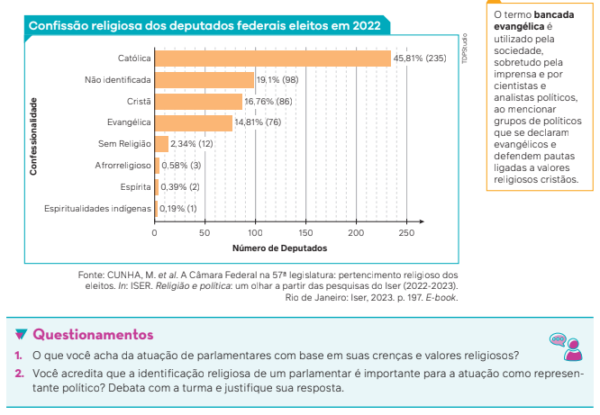